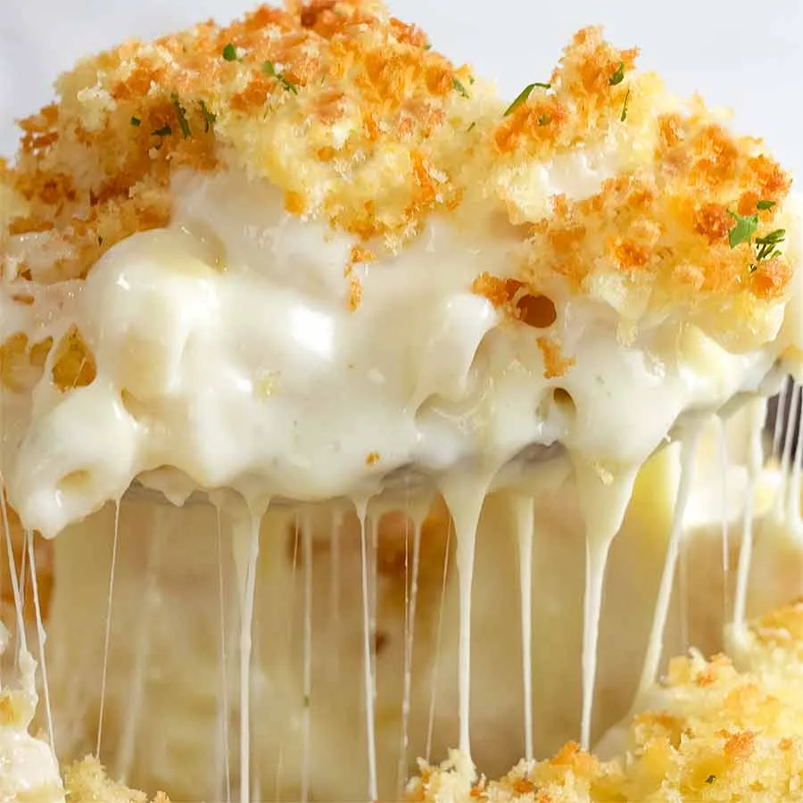
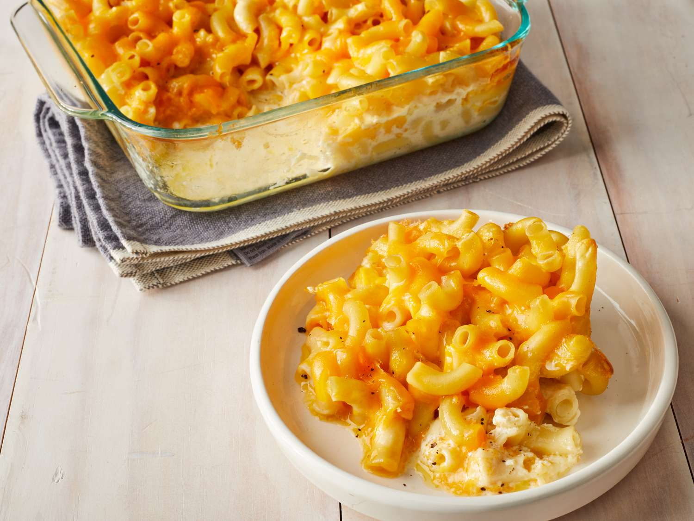
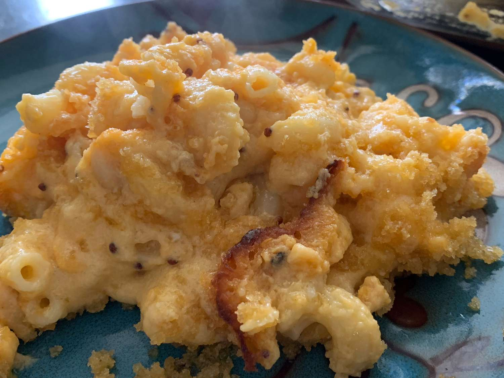

<html></html>
<head>
    <title>recipe</title>
    <meta name="viewport" content="width=device-width, initial-scale=1">
    <link rel="stylesheet" href="recipesty.css">
    <link rel="stylesheet" href="https://fonts.googleapis.com/css?family=Zain|ABeeZee|Inter">
</head>
<body>
    <div class="header">
        <h1>Flavor Fusion</h1>
    </div>
    <div class="navbar">
        <ul>
            <li><a href="frontpage.html">Home</a></li>
            <li><a href="category1.html">Appetizers</a></li>
            <li><a href="category2.html">Main Courses</a></li>
            <li><a href="category3.html">Desserts</a></li>
        </ul>
    </div>
    <div class="name">
        <p style="font-size: 250%;">Homemade Mac and Cheese</p>
    </div>

    <div class="scrolling-gallery">
        
        
        
        
    </div>

    <div class="desc">
        <div class="descinfo">
            <p>
                This Easy Homemade Mac and Cheese Recipe is made with 6 ingredients in 15 minutes on the stovetop (no baking required)! Time to ditch the boxed mac and cheese for this irresistibly creamy, smooth & cheesy homemade recipe! 
            </p>
        </div>

        <div class="time">
            
            <br> Total Time: 15 min
        </div>

        <div class="flip-card">
            <div class="flip-card-inner">
              <div class="flip-card-front">
                
                <br>
                Nutritional information
              </div>
              <div class="flip-card-back">
                <p>
                    serving size: 1 of 8<br>
                    calories: 271<br>
                    total fat: 13.8g<br>
                    carbs: 25g<br>
                    sugar: 2.6g<br>
                    protein: 12.3g<br>
                    cholesterol: 41.7mg<br>
                    sodium: 351mg<br>
                </p>
              </div>
            </div>
          </div>
        
    </div>

    <div class="bottom">
        <div class="ingredients">
            <h2 style="text-align: center;">Ingredients</h2>
            <hr class="divider" style="width: 70%">
            <div class="checkbox">
                <form>

                    <p>
                        <input type="checkbox" name="ingredients" class="strikethrough">
                        <label>8 ounces elbow macaroni uncooked<br></label>
                    </p>
		    <p>
                        <input type="checkbox" name="ingredients" class="strikethrough">
                        <label>2 Tablespoons salted butter<br></label>
                    </p>
		    <p>
                        <input type="checkbox" name="ingredients" class="strikethrough">
                        <label>2 Tablespoons all-purpose flour<br></label>
                    </p>
		    <p>
                        <input type="checkbox" name="ingredients" class="strikethrough">
                        <label>1/2 teaspoon sea salt<br></label>
                    </p>
		    <p>
                        <input type="checkbox" name="ingredients" class="strikethrough">
                        <label>1/4 teaspoon garlic powder (optional but recommended)<br></label>
                    </p>
		    <p>
                        <input type="checkbox" name="ingredients" class="strikethrough">
                        <label>1 cup  whole milk<br></label>
                    </p>
		    <p>
                        <input type="checkbox" name="ingredients" class="strikethrough">
                        <label>1/4 cup sour cream or Greek yogurt<br></label>
                    </p>
		    <p>
                        <input type="checkbox" name="ingredients" class="strikethrough">
                        <label>8 ounces shredded cheddar cheese (2 cups)<br></label>
                    </p>

                    
                </form>
             </div>
        </div>        

        <div class="instructions">
            <h2 style="text-align: center;">Instructions</h2>
            <hr class="divider">
            <div class="steps">
                <ol type="1">
                    <li>Cook elbow macaroni according to package instructions. Be sure to add ¼ tsp salt to the water used to boil the noodles. Drain, and set aside.</li><br>
	<li>Mix flour, sea salt, and garlic powder together in a small bowl. Set aside.</li><br>
	<li>In a medium saucepan over medium heat, melt the butter.</li><br>
	<li>Add flour mixture and whisk to combine.</li><br>
	<li>Cook for 1 minute until mixture is slightly brown.</li><br>
	<li>Add 1 cup milk and whisk until the mixture is smooth.</li><br>
	<li>Add sour cream (or Greek yogurt) and whisk until smooth.</li><br>
	<li>Cook on medium-high heat until the mixture is thickened (about 3-5 minutes). Do not let it boil.</li><br>
	<li>Once mixture is thick (sticks to the back of the spatula), reduce heat to low and add cheese. Whisk until cheese is melted and mixture is smooth. Taste and add more salt/seasoning if desired.</li><br>
	<li>Add cooked pasta to the pot of cheese sauce and stir until the sauce is evenly distributed.</li><br>
	<li>Let the mac and cheese cool for 3-5 minutes or until the cheese sauce has thickened a little bit and sticks to the noodles. Serve warm!</li><br>
                </ol>
            </div>
        </div>
    </div>
</body>
</html>